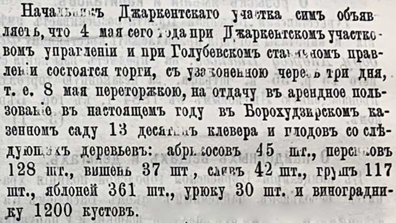

Zeitungsecke · 1886
Подробная опись плодовых деревьев Борохудзирского казённого сада, выставленного на торги: 361 яблоня, 128 персиков, 1200 кустов винограда и другое.

СОВ, № 18, 03.05.1886, с. 105.
«Начальникъ Джаркентскаго участка симъ объявляетъ, что 4 мая сего года при Джаркентскомъ участковомъ управленіи и при Голубевскомъ станичномъ правленіи состоятся торги, съ узаконенною черезъ три дня, т.е. 8 мая переторжкою, на отдачу въ арендное пользованіе въ настоящемъ году въ Борохудзирскомъ казенномъ саду 13 десятинъ клевера и плодовъ со слѣдующихъ деревьевъ: абрикосовъ 45 шт., персиковъ 128 шт., вишень 37 шт., сливъ 42 шт., грушъ 117 шт., яблоней 361 шт., урюку 30 шт. и виноградныку 1200 кустовъ.»
Находка: Светлана СИ, форум ВГД — ссылка на сообщение.
www.starinariy.kz ·
www.starinariy.ru